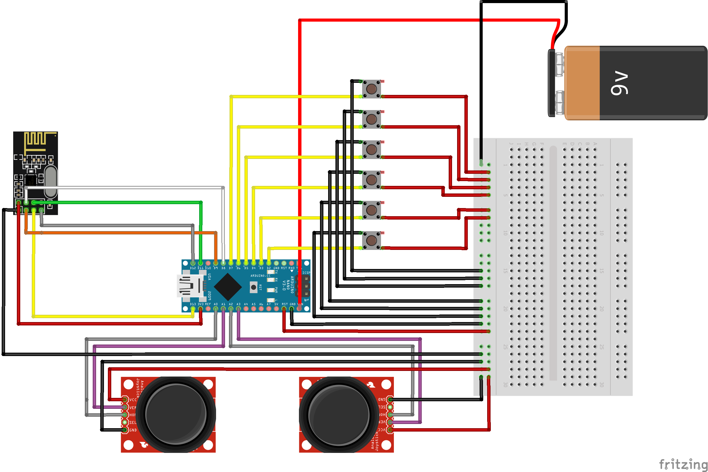

Electrical
Electrical System Overview
Robot System Diagram

This is the wiring schematic for the electronics inside M-O himself.
Controller System Diagram
This is the wiring schematic for the electronics inside the controller
Battery
Overview
For this project, the major electrical goal was having a chargeable internal power source.
After experiencing the pains of managing a wire that powers a moving object, the decision to
keep the power source internal was a simple one to make. The exact specifications of the
power source changed through the sprints as new components were included and complications
arose, but the core goal remained.
Iterations
Initially, the internal power source was a combination of two nickel metal hydride (NiMH)
battery packs, with voltages of 9.6V and 12V. The 12V battery pack was intended to solely
power the motor shield and the servos responsible for the arms and head, and the 9.6V
battery pack was intended for the other subsystems and their components, including the LED
Matrix display, speakers, and the head LED strip.
This was achieved with a servo sitting at the base of the neck with four ball bearings on a
circular track around it, allowing it to rotate while providing more balance than we would
have putting all the head's weight on one servo. Four laser-cut supports then extend from
the circular servo attachment and are secured to the top panel of the head's skeleton.
The issues with this original design included the necessity to standardize a charging
voltage so there would only need to be one charging port and the complications involved with
NiMH batteries. To only have one charging port, the charging voltage would have to be
changed within the body to be able to charge both battery packs; this would require either a
buck converter to charge the 9.6V with a charging voltage of 12V or a boost converter to
charge both packs with a charging voltage of 5V. Another difficulty is the drawbacks of NiMH
batteries, as the process to charge them is very involved and tricky; to avoid overheating
the pack and evenly distributing the charge, the safest charging method was trickle
charging. The greatest drawback of this charging method is the lengthy charge time.
Taking these complications into consideration, the decision was made to reduce the number of
battery packs to a single lithium polymer (LiPo) 12V pack with a greater capacity and use
buck converters to reduce the voltage when necessary. This new single-pack design simplified
the charging issues; the issues it brought with it was that it was more massive than either
of the original battery packs and required all power and ground wires to be routed to the
base of the body, where it was mounted to avoid offsetting the center of mass of the entire
robot.
Despite the new wire management considerations, the new single-pack system was a significant
improvement over the original dual-pack system and still achieved the goal of a fully
internal power source.